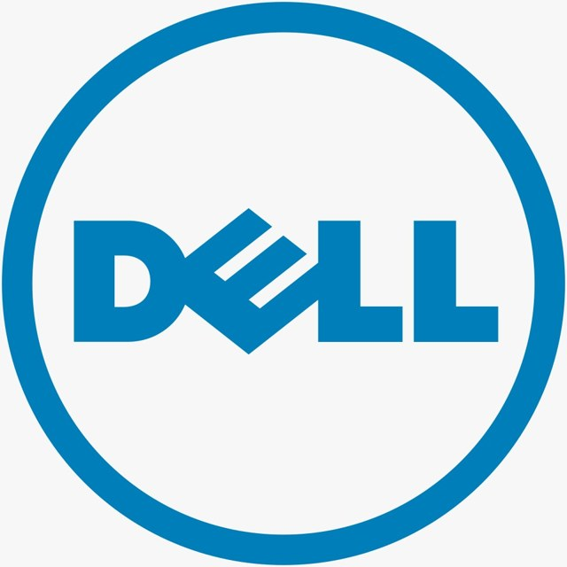
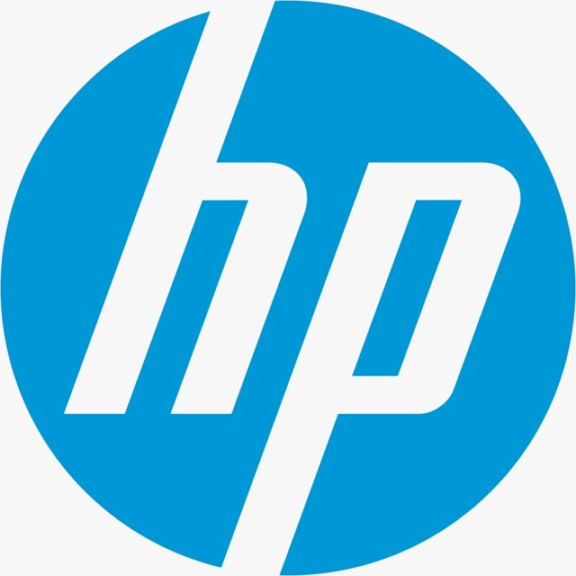
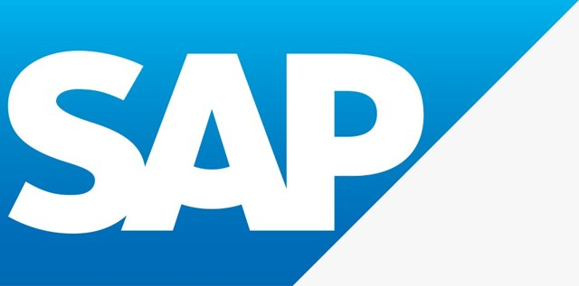
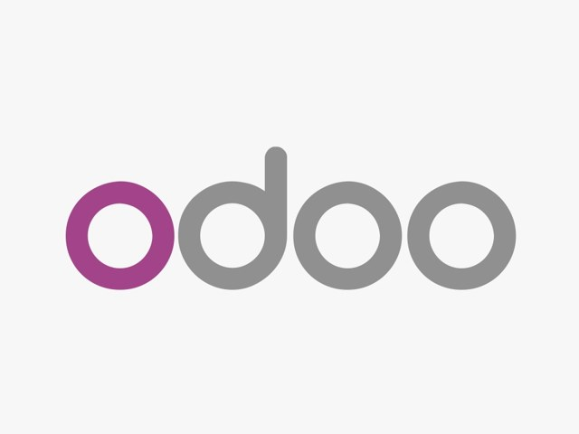
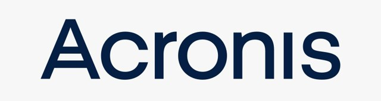
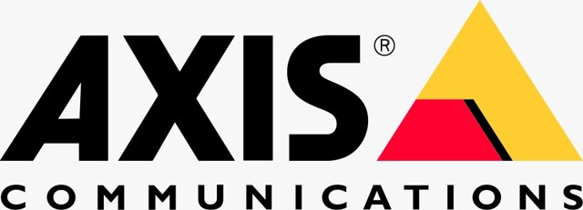

Roots est partenaire des grandes marques technologiques. Pour chacune, nous conseillons, fournissons, installons et maintenons, avec un service après-vente assuré localement.

Partenaire officiel Dell pour l’Afrique de l’Ouest. Nous fournissons, configurons et maintenons ordinateurs portables, stations de travail et serveurs Dell, avec garantie constructeur, pièces d’origine et un service après-vente assuré localement.

Distributeur de la gamme professionnelle HP : ordinateurs portables, postes fixes, imprimantes et consommables. Nous conseillons le modèle adapté à chaque usage, assurons l’installation, la mise en service et le suivi de garantie.
Licences et environnements Microsoft : Windows, Microsoft 365, messagerie professionnelle et outils collaboratifs. Nous déployons, migrons et sécurisons vos postes et vos boîtes mail, avec accompagnement des équipes et support continu.

Solutions de gestion SAP pour les entreprises structurées. Nous accompagnons le cadrage, l’intégration et la reprise de données, afin de connecter finance, achats et logistique dans un système unique et fiable.

Intégrateur Odoo : ERP et CRM modulaires pour la gestion commerciale, les stocks, la comptabilité et la facturation. Nous paramétrons les modules utiles à votre activité, formons vos équipes et assurons l’évolution de la solution.
Sécurité réseau Fortinet : pare-feu nouvelle génération, filtrage, VPN et segmentation. Nous dimensionnons, installons et supervisons vos équipements pour protéger vos sites, vos données et vos connexions internet.
Protection des postes et des serveurs avec Sophos : antivirus nouvelle génération, protection contre les rançongiciels et console de supervision centralisée. Nous déployons les agents, définissons les politiques et suivons les alertes.

Sauvegarde et reprise d’activité avec Acronis. Nous mettons en place des sauvegardes automatiques, locales et externalisées, testons les restaurations et garantissons la continuité de votre activité en cas de panne ou d’attaque.
Stockage et serveurs NAS Synology : partage de fichiers, sauvegarde centralisée, gestion des droits et accès distant sécurisé. Nous dimensionnons la capacité et configurons la solution adaptée à votre volume de données.
Équipements réseaux et solutions d’infrastructure Huawei : commutateurs, points d’accès et liaisons. Nous concevons et déployons des réseaux d’entreprise performants, avec une couverture fiable sur l’ensemble de vos sites.

Vidéosurveillance professionnelle Axis : caméras IP haute définition, enregistrement et supervision. Nous étudions l’implantation, installons les caméras et configurons l’accès distant pour sécuriser vos locaux.
Solutions de vidéosurveillance Hikvision : caméras, enregistreurs et contrôle d’accès. Nous réalisons l’étude, le câblage, l’installation et le paramétrage, avec formation à l’usage et maintenance.

Onduleurs et protection électrique APC by Schneider Electric. Nous protégeons serveurs, postes et équipements réseau contre les coupures et les surtensions, avec dimensionnement adapté et remplacement des batteries.
Réseaux et Wi-Fi professionnels Ubiquiti : points d’accès, commutateurs et liaisons sans fil. Nous déployons des réseaux couvrant de grandes surfaces, avec supervision centralisée et qualité de service maîtrisée.